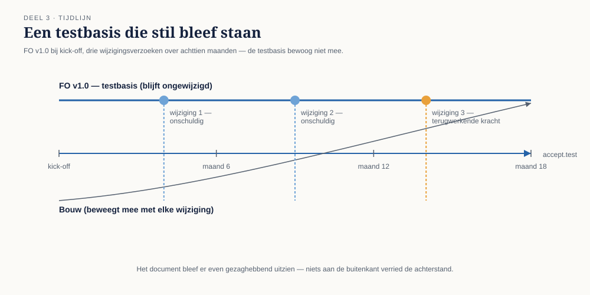
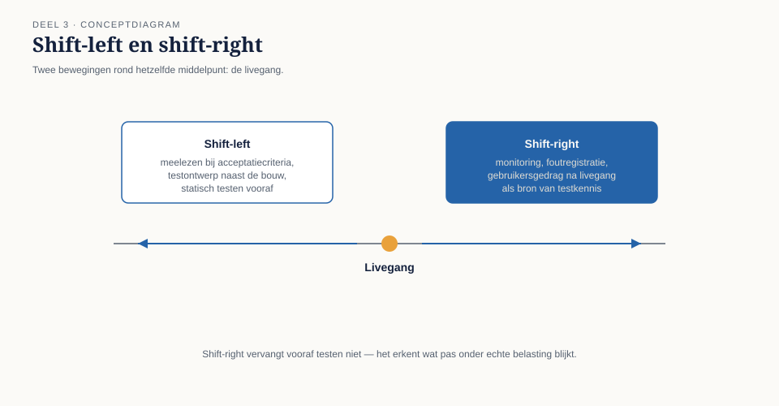
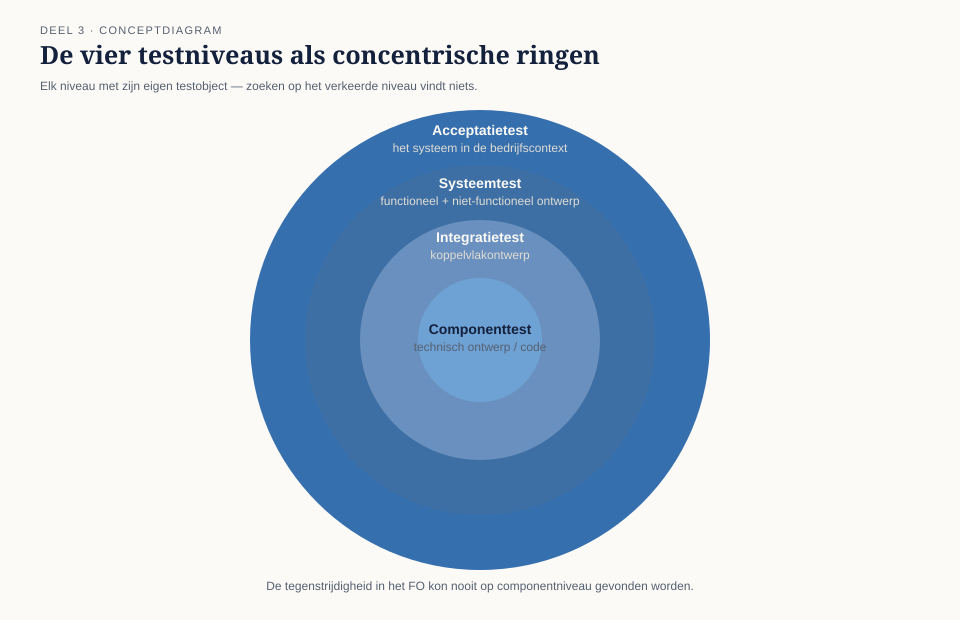
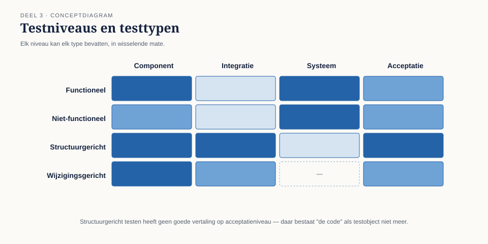

Cursus Testen en Kwaliteitsborging · Niveau 1 (ISTQB CTFL) · Deel 3 van 30
Testen in de levenscyclus.
Het functioneel ontwerp van WGP 2.0 zag er bij de acceptatietest nog precies zo gezaghebbend uit als op de dag van de kick-off — een pdf met een versienummer en een goedkeuringsstempel. Alleen liep het inmiddels drie wijzigingsverzoeken achter op de werkelijkheid. Dit deel behandelt hoe testen zich verhoudt tot de ontwikkelaanpak, shift-left en shift-right, de vier testniveaus, testtypen, en confirmatie- en regressietesten — en sluit bevinding T3.
10secties
±2uleestijd + werkboek
7controlevragen
T3bevinding gesloten
Positionering. Deze cursus is een voorbereiding op het ISTQB Certified Tester Foundation Level-examen (en voor latere delen Advanced Level) en uitdrukkelijk geen vervanging van het officiële ISTQB-syllabusmateriaal, te raadplegen via istqb.org. Alle formuleringen, figuren en werkvormen in dit materiaal zijn van Ductus; studeer voor het examen altijd óók de officiële bron.
Niveau 1: ➊ Waarom getest wordt → ➋ Het testproces → ➌ Testen in de levenscyclus (hier) → ➍ Statisch testen → ➎ Black-boxtechnieken → ➏ White-box en ervaringsgebaseerd testen → ➐ Risicogebaseerd testen → ➑ Uitvoeren en bevindingen → ➒ Rapporteren en gereedschap → ➓ Examentraining en capstone
01
Waar dit deel over gaat
⏱ 8 min
Deel 2 gaf u de testbasis en traceerbaarheid als instrument. Dit deel laat zien dat een testbasis niet stilstaat: zij veroudert, soms geruisloos, terwijl het document er even gezaghebbend blijft uitzien.
Aan het eind van dit deel kunt u:
de samenhang tussen ontwikkelaanpak en testaanpak uitleggen, voor watervalachtige en voor iteratieve aanpakken;
de testniveaus onderscheiden en per niveau aangeven welke testbasis, welk testobject en welke typische afwijkingen erbij horen;
het begrip shift-left toepassen en het onderscheid maken met shift-right;
confirmatietesten en regressietesten onderscheiden en toepassen;
uitleggen waarom een testbasis kan verouderen zonder dat iemand dat opmerkt, en hoe u dat voorkomt.
Dit deel sluit bevinding T3: WGP 2.0 werd getest tegen een functioneel ontwerp van veertien maanden oud, terwijl drie goedgekeurde wijzigingen al wél in de bouw zaten.
02
Een testbasis van veertien maanden oud
⏱ 10 min
Toen Jelle Bakker het functioneel ontwerp van WGP 2.0 voor het eerst kreeg, was het versie 1.0, gedateerd op de kick-off. Tegen de tijd dat de acceptatietest begon, achttien maanden later, waren er drie formeel goedgekeurde wijzigingsverzoeken doorgevoerd — allemaal in de bouw, correct, door een team dat zijn werk goed deed.
Het testteam kreeg bij de start van de acceptatietest hetzelfde document als Jelle op dag één. Niemand had de wijzigingsverzoeken erin verwerkt, omdat niemand dat als iemands taak had aangewezen. Niets aan de buitenkant verried dat het document drie wijzigingen achterliep op de werkelijkheid die het moest beschrijven. Twee van de drie wijzigingen waren onschuldig. De derde betrof precies de regel over mutaties met terugwerkende kracht — de regel die uiteindelijk de storing veroorzaakte.

Figuur 3-1 — Tijdlijn: FO v1.0 bij kick-off, drie wijzigingsverzoeken over achttien maanden, testbasis die stil bleef staan terwijl de bouw meebewoog.
Kernzin
Een testbasis veroudert niet met een knal maar geruisloos, wijziging voor wijziging, en het document blijft er precies zo gezaghebbend uitzien als op dag één.
Dit is bevinding T3. Zij is nauw verwant aan T1 uit deel 2, met een belangrijk verschil: T1 ontstaat doordat een verwijzing nooit is gelegd; T3 ontstaat doordat een verwijzing wél lag, maar wees naar iets wat niet meer klopte. Een verstopte fout, geen ontbrekende.
Controlevraag
Uit Werkboek deel 3, Opdracht 3.1 — waar zat de veroudering?
1Waarom viel het niemand op dat het functioneel ontwerp achterliep op de werkelijkheid — geef minstens twee redenen die los staan van onachtzaamheid van individuen.Toon antwoord
Onder meer: (1) niemand had het bijwerken van het testbasisdocument als expliciete taak toegewezen bij het goedkeuren van een wijzigingsverzoek — het proces voor "wijziging goedkeuren" en het proces voor "testbasis actueel houden" waren nooit gekoppeld; (2) het document behield zijn autoriteit uiterlijk (versienummer, stempel), waardoor niemand reden had om te twijfelen; (3) de testfunctie werd pas laat ingeschakeld, waardoor er geen vroeg moment was waarop iemand met testersoog naar het document keek.
03
Testen en de ontwikkelaanpak
⏱ 14 min
Bij een watervalachtige aanpak — eerst analyseren, dan ontwerpen, dan bouwen, dan testen — ligt de verleiding voor de hand: testactiviteiten mee laten schuiven met de fase, dus pas écht beginnen als de bouw klaar is. Deel 2 liet al zien waarom dat een denkfout is. Het reële risico van watervalachtige aanpakken zit niet in de volgorde van bouwen, maar in de lengte van de periode waarin de testbasis kan verouderen zonder dat iemand het merkt. Hoe langer de doorlooptijd tussen "testbasis vastgesteld" en "testen uitvoeren", hoe groter de kans op een T3-situatie.
In iteratieve en continue aanpakken (scrum, SAFe) is de testbasis per definitie korter geldig: een user story met acceptatiecriteria wordt binnen één sprint gebouwd en getest. Dat verkleint het T3-risico aanzienlijk — niet omdat agile teams zorgvuldiger zijn, maar omdat de tijd waarin een testbasis kan verouderen simpelweg korter is. Wat wél overblijft: de acceptatiecriteria van een oude story kunnen alsnog verouderen wanneer een latere story het gedrag wijzigt zonder dat de eerdere story's tests worden herzien. Dit heet regressierisico op backlogniveau, en het is de agile variant van T3.
Shift-left
Shift-left betekent: testactiviteiten zo vroeg mogelijk in de levenscyclus starten, in plaats van ze te laten wachten op een af product. Concreet: meelezen bij het opstellen van acceptatiecriteria, testgevallen ontwerpen naast de bouw in plaats van erna, statisch testen op elk document dat als testbasis gaat dienen. Shift-left is geen technisch trucje maar een organisatorische keuze: het vereist dat de tester wordt uitgenodigd bij refinement en ontwerpoverleg, niet pas bij de oplevering. Bij Meridiaan bestond die uitnodiging voor WGP 2.0 niet.
Shift-right
Het spiegelbeeld: informatie die ná livegang wordt verzameld — monitoring, foutregistratie, gebruikersgedrag — als bron van testkennis gebruiken. Shift-right vervangt vooraf testen niet; het erkent dat sommige risico's pas onder echte belasting, met echte data en echte gebruikers zichtbaar worden.

Figuur 3-2 — Shift-left en shift-right als twee bewegingen rond hetzelfde middelpunt: de livegang.
Belangrijk voor niveau 1: shift-right is geen excuus om vooraf minder te testen. Bij een systeem dat aanspraken vastlegt, is "we zien het wel in productie" geen aanvaardbare testaanpak voor de kernberekening — wel voor bijvoorbeeld een nieuwe indeling van een informatiescherm.
Controlevraag
Uit Werkboek deel 3, Opdracht 3.4 — shift-left toepassen
1Rob Hendriks vraagt Iris om vanaf nu bij de refinement-sessies aan te schuiven. Noem drie concrete dingen die zij daar kan doen die onder shift-left vallen, en één risico van te vroeg en te uitgebreid bemoeien.Toon antwoord
Onder meer: de drie toetsvragen uit deel 2 (kun je hier een testgeval uit afleiden, kun je vaststellen wanneer het fout gaat, spreekt dit iets anders tegen) toepassen op elk nieuw acceptatiecriterium; doorvragen op foutgedrag ("wat gebeurt er als dit veld leeg blijft?"); vroeg testcondities benoemen zodat het team zelf ziet hoe groot een story eigenlijk is. Risico: vertraging van de refinement zelf, en het risico dat de tester ongemerkt de rol van eisensteller overneemt in plaats van eisen te bevragen — de grens ligt bij wie het besluit neemt over wát de eis wordt.
04
Testniveaus
⏱ 14 min
Een testniveau is een gegroepeerde verzameling testactiviteiten, georganiseerd rond een bepaald object en een bepaalde testbasis.
Niveau
Testobject
Typische testbasis
Typische afwijking
Componenttest
een enkele module, klasse of functie
technisch ontwerp, code zelf
logica-fout binnen één onderdeel
Integratietest
samenwerking tussen componenten of systemen
koppelvlakontwerp, architectuur
verkeerde aanname over het koppelvlak
Systeemtest
het systeem als geheel
functioneel en niet-functioneel ontwerp
gedrag dat pas op systeemniveau ontstaat
Acceptatietest
het systeem in de bedrijfscontext
eisen, bedrijfsprocessen, wetgeving
het systeem doet wat er staat, niet wat nodig is

Figuur 3-3 — De vier testniveaus als concentrische ringen, met bij elke ring het bijbehorende testobject.
Elk niveau heeft zijn eigen testbasis, en dat is precies waarom afwijkingen zich op een specifiek niveau concentreren. De tegenstrijdigheid in het functioneel ontwerp van WGP 2.0 kon onmogelijk op componentniveau gevonden worden — daar bestaat het document niet als testbasis. Vuistregel: als een afwijking op het verkeerde niveau wordt gezocht, wordt zij niet gevonden, ongeacht hoeveel tijd u aan dat niveau besteedt.
Acceptatietesten nader bekeken
Binnen de acceptatietest bestaan gangbare varianten, die bij Meridiaan alle drie voorkomen maar zelden als zodanig worden benoemd: functionele acceptatietest (doet het systeem wat de eisen zeggen?), operationele acceptatietest (kan de beheerorganisatie het systeem daadwerkelijk draaien — back-ups, uitwijk, monitoring, batchverwerking? Dit is precies het gebied van bevinding T5, deel 8) en regelgevings- of contractuele acceptatietest (voldoet het aan wat een wet, toezichthouder of contract vereist?). Bij WGP 2.0 werd alleen de eerste variant uitgevoerd; de operationele acceptatietest vond nooit plaats.
05
Testtypen
⏱ 8 min
Waar een testniveau bepaalt waar u test, bepaalt een testtype waarnaar u kijkt. Eén testniveau kan meerdere testtypen bevatten: functioneel testen (doet het systeem wat het moet doen — het merendeel van de 312 WGP-testgevallen viel hieronder), niet-functioneel testen (hóe doet het systeem het: snel genoeg, veilig genoeg, bruikbaar genoeg — volledig uitgewerkt in deel 19), structuurgericht (white-box) testen (is elk pad, elke tak, elke voorwaarde in de code geraakt — deel 6), en wijzigingsgericht testen (confirmatie- en regressietesten, zie hieronder).

Figuur 3-4 — Testniveaus en testtypen als matrix: elk niveau kan elk type bevatten, in wisselende mate.
Controlevraag
Uit Werkboek deel 3, Opdracht 3.2 — niveau of type?
1Het portaal accepteert een mutatie, maar de kernadministratie ontvangt hem niet. Welk testniveau had dit moeten vinden, en welk testtype was in het geding?Toon antwoord
Integratietest, functioneel — dit is exact bevinding T7, en illustreert waarom een koppelvlak zijn eigen testniveau verdient in plaats van "erbij getest" te worden op systeemniveau.
06
Confirmatietesten en regressietesten
⏱ 12 min
Dit onderscheid wordt op het examen vaker fout beantwoord dan bijna enig ander begrippenpaar, en het is in de praktijk minstens zo verwarrend.
Confirmatietest (ook wel hertest): een eerder gefaalde test opnieuw uitvoeren, nadat de gevonden afwijking is hersteld, om vast te stellen of precies dát ene probleem nu is opgelost.
Regressietest: opnieuw testen van functionaliteit die niet is gewijzigd, om vast te stellen dat een wijziging elders geen ongewenste neveneffecten heeft veroorzaakt.
Bij WGP 2.0 werd de tegenstrijdigheid in de deeltijdregel wél hersteld en herbevestigd (confirmatietest, correct uitgevoerd) — maar het herstel raakte een module die de terugwerkende-krachtberekening deelde. Er is geen regressietest op die module uitgevoerd, omdat niemand had vastgesteld dat de twee gebieden met elkaar samenhingen. Regressietesten vereisen dus zicht op samenhang, en dat zicht is precies wat traceerbaarheid (deel 2) mogelijk maakt.
Kernzin
Een confirmatietest bewijst dat u hebt opgelost wat u dacht op te lossen. Een regressietest bewijst dat u daarbij niets anders hebt stukgemaakt. Het eerste zonder het tweede is een halve garantie.
Controlevraag
Uit Werkboek deel 3, Opdracht 3.3 — confirmatie of regressie?
1Een team voert na elke wijziging alléén de confirmatietest uit, "om tijd te besparen". Waarom is dat risicovol, met de deeltijdregel als voorbeeld?Toon antwoord
Het herstel van de deeltijdregel raakte een module die gedeeld werd met de terugwerkende-krachtberekening. Een confirmatietest op de deeltijdregel zou geslaagd zijn — en de nieuwe fout in het gedeelde stuk volledig hebben gemist, omdat die zich in een ander functioneel gebied manifesteerde. Alleen een regressietest, gebaseerd op de samenhang die traceerbaarheid zichtbaar maakt, had dit kunnen vangen.
07
Onderhoudstesten
⏱ 8 min
Testen bij wijziging van een bestaand, al levend systeem — in tegenstelling tot nieuwbouw. De testbasis is vaak minder compleet dan bij nieuwbouw: oorspronkelijke documentatie is verouderd of kwijt, en "hoe het hoort" wordt afgeleid van "hoe het nu werkt" — met het risico dat een bestaande afwijking als bedoeld gedrag wordt overgenomen. Impactanalyse is het startpunt: wat kan deze wijziging allemaal raken, direct en indirect? Traceerbaarheid (deel 2) is hier het instrument.
Meridiaans Werkgeversportaal 1.0 draait sinds 2013 naast WGP 2.0 nog steeds voor een deel van de werkgevers. Elke wijziging daaraan is per definitie onderhoudstesten, met een extra complicatie: de oorspronkelijke bouwers zijn niet meer in dienst, en de testbasis bestaat feitelijk uit het systeem zelf plus de ervaring van Astrid Poelman.
Controlevraag
Uit Werkboek deel 3, Opdracht 3.5 — onderhoudstesten aan WGP 1.0
1Astrid Poelman krijgt het verzoek een klein extra veld toe te voegen aan WGP 1.0, waarvan de oorspronkelijke documentatie grotendeels ontbreekt. Wat is hier de testbasis, en welk risico brengt die specifiek met zich mee?Toon antwoord
De testbasis bestaat feitelijk uit het systeem zelf plus de ervaring van de mensen die het kennen. Het specifieke risico: "hoe het hoort" wordt afgeleid van "hoe het nu werkt", waardoor een bestaande, al jaren aanwezige afwijking per ongeluk als bedoeld gedrag wordt overgenomen in plaats van hersteld.
08
TMAP-lens
⏱ 8 min
Hoe heet dit daar
Testniveaus verschijnen in TMAP als teststages, met een vergelijkbare opbouw (team test, business test, deploy for business test). Confirmatie- en regressietesten heten er meestal gewoon zo, met een sterkere nadruk op geautomatiseerde regressiesets als continu vangnet.
Waar het werkelijk anders is
TMAP benadrukt sterker dat testniveaus in een cross-functioneel team niet strikt na elkaar maar grotendeels gelijktijdig lopen, gedragen door verschillende teamleden tegelijk, in plaats van als opeenvolgende overdrachtsmomenten tussen aparte teams. Shift-left is in de TMAP-gedachte minder een aparte praktijk en meer de standaardtoestand: als kwaliteit ingebouwd wordt door het hele team, is er per definitie geen moment waarop "het testen" nog moet beginnen. Voor Meridiaan is dat verschil zichtbaar in de vergelijking tussen WGP 2.0 (aparte fasen, aparte overdrachten, testen als eindstation) en het latere Programma Mutatieplatform in niveau 2, waar teams welbewust naar de TMAP-gedachte toegroeien.
09
Examenaansluiting
⏱ 10 min
Dit deel dekt CTFL v4.0, hoofdstuk 2: testen binnen de softwareontwikkelingslevenscyclus, de vier testniveaus, testtypen, onderhoudstesten. Overwegend K2-leerdoelen: het toepassen van het juiste niveau of type op een gegeven scenario.
Veelgemaakte examenfouten: componenttest en integratietest verwisselen wanneer de vraag over een koppelvlak gaat tussen twee delen van hetzelfde systeem — dat blijft integratietest, ook al lijkt het "intern"; confirmatietest en regressietest verwisselen — vuistregel: gaat de vraag over "is déze fout weg", dan confirmatie, gaat het over "is er iets anders stuk", dan regressie; en shift-left interpreteren als "sneller testen" in plaats van "eerder beginnen".
Controlevragen
Uit de oefentoets van Werkboek deel 3, in examenstijl
1Wat is het belangrijkste risico van een lange doorlooptijd tussen het vaststellen van de testbasis en de daadwerkelijke testuitvoering? A. De testers vergeten hun eigen testgevallen. B. De testbasis kan verouderen zonder dat dit opgemerkt wordt. C. De testomgeving is dan niet meer beschikbaar. D. Het testbudget raakt op.Toon antwoord
B.
2In een agile team wordt een user story uit sprint 3 later geraakt door een wijziging in sprint 9, zonder dat de oorspronkelijke acceptatietests worden herzien. Hoe wordt dit risico genoemd? A. Testbasis-veroudering op documentniveau. B. Regressierisico op backlogniveau. C. Operationeel acceptatierisico. D. Shift-left-risico.Toon antwoord
B. De agile variant van T3.
10
Kruisverwijzingen en terug naar de casus
⏱ 8 min
Dit deel raakt: Scrum — backloghygiëne en het voorkomen van regressierisico op backlogniveau; SAFe — hoe testniveaus zich verhouden tot een release train, verder uitgewerkt in deel 18; Software-architectuur — koppelvlakontwerp als testbasis voor de integratietest; OutSystems — geautomatiseerde regressiesets in een low-code omgeving.
Bevinding T3 is nu preciezer te maken dan in de post-mortem zelf stond: de eerste kloof tussen testbasis en werkelijkheid ontstond bij het eerste goedgekeurde wijzigingsverzoek dat wél in de bouw maar niet in het functioneel-ontwerpdocument werd doorgevoerd. Een lichte ingreep had volstaan: bij elk goedgekeurd wijzigingsverzoek een vaste laatste stap "testbasis bijgewerkt: ja/nee, door wie" — geen nieuw proces, één checklist-item aan een bestaand proces toegevoegd. Vergelijk met de traceerbaarheidskolom uit deel 2: steeds is de ingreep klein, de opbrengst groot.
Vooruit naar deel 4. Een testbasis die verouderd is, is ook een testbasis die nooit als geheel is gereviewd — en dat is precies waar de tegenstrijdigheid tussen hoofdstuk 4 en bijlage B ongezien is gebleven. Deel 4 gaat over statisch testen en sluit bevinding T4.
Verder naar deel 4
Deel 4 behandelt statisch testen, reviewsoorten en het reviewproces — en sluit bevinding T4: de tegenstrijdigheid in het functioneel ontwerp die nooit is gereviewd.